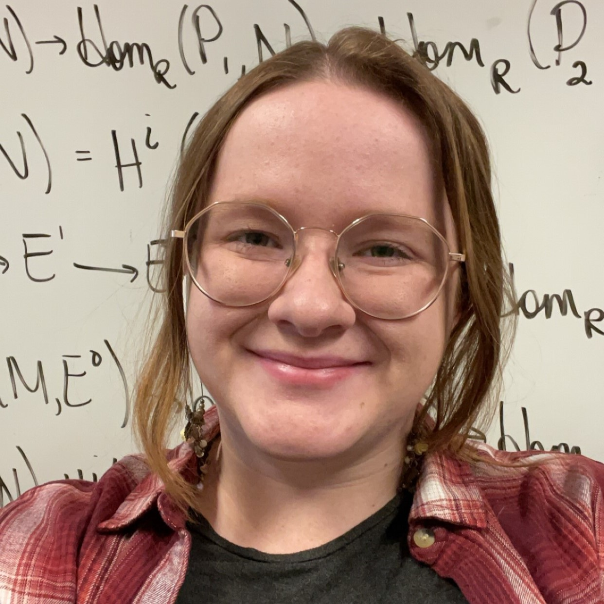

Mathematics PhD Candidate

I am a PhD candidate in my fourth year at the University of Nebraska-Lincoln. I am advised by Eloísa Grifo. I am interested in symbolic powers of ideals and Gröbner bases. I am also interested in topological data analysis and sheaf theory. My email is sfowler14@unl.edu and my office is Avery Hall 232.
This website was last updated on February 27, 2025.